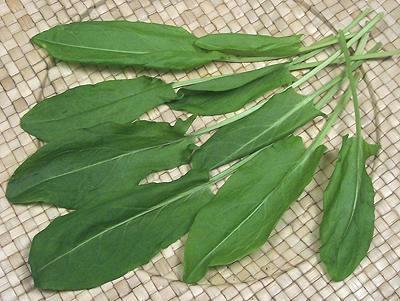

Garden Sorrel

[Spinach dock; Shchavel (Russia, Ukraine); Rugstyne (Lithuania);
Macris, Stevie (Rumania); Szczaw (Poland); Azeda (Portugal); Kuzu Kulagi
(Turkish); Ambada Bhaji, Gongoora (India), Rau chua, Rau thom
(Viet-American); Rumex acetosa | French Sorrel;
Rumex scutatus]
Sorrel grows wild over much of Europe and is a common crop there. Despite
being called for by many recipes, it is of very limited availability
here in Southern California, probably due to perishability. Sorrel's
taste is almost exactly that of the unrelated
Wood Sorrel. As with
spinach, sorrel's tartness is provided by oxalic acid.
More on Buckwheats.
More on Southeast Asian Herbs.
This herb is most used in salads and sauces in England, France and
Italy. Here in North America, Sorrel has joined the Vietnamese herb
plate. There is no Vietnamese name, but Viet-Americans call it
Rau chua (sour herb) or Rau thom (fresh herb).
Buying
It is very uncommon here in Southern California
due to uncertain demand and perishability. It is sometimes seen in
Farmer's Markets, but more reliably at Jon's Market in Glendale, a
market serving Russian and Armenian communities.
Storing:
This herb needs to get from field to table
very promptly before it wilts. Loosely wrapped, it will last a day or
two in the fridge.
Subst:
Spinach is considered an imperfect substitute
because its flavor is more complex and it isn't nearly as tart (many
European recipes call for a combination of spinach and sorrel).
cn_sorrelz 170408 - www.clovegarden.com
©Andrew Grygus - agryg@clovegaden.com - Photos on this
page not otherwise credited are © cg1 -
Linking to and non-commercial use of this page permitted